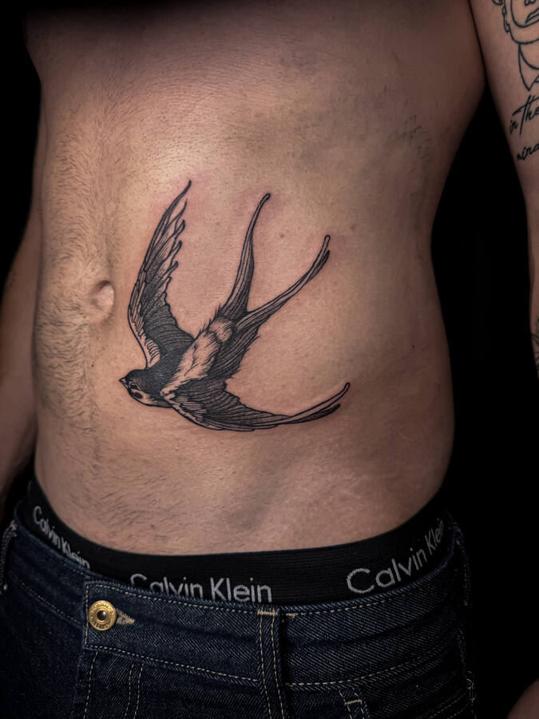
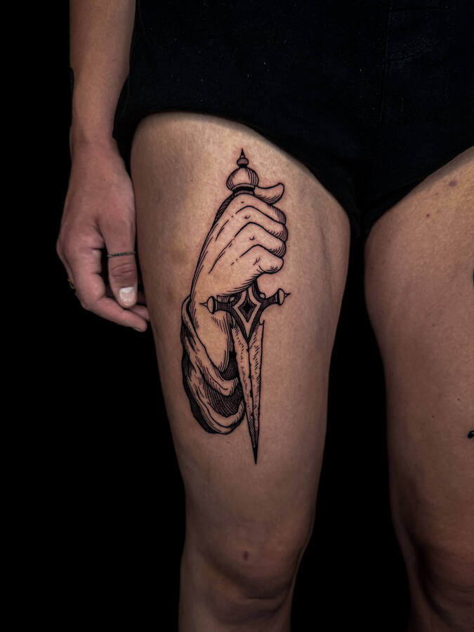
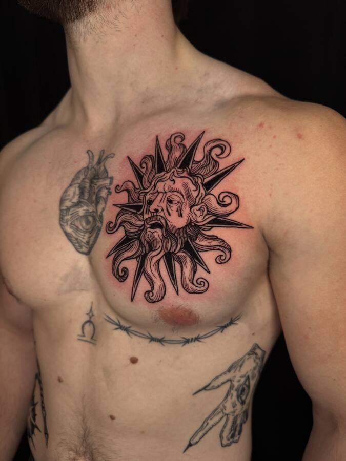
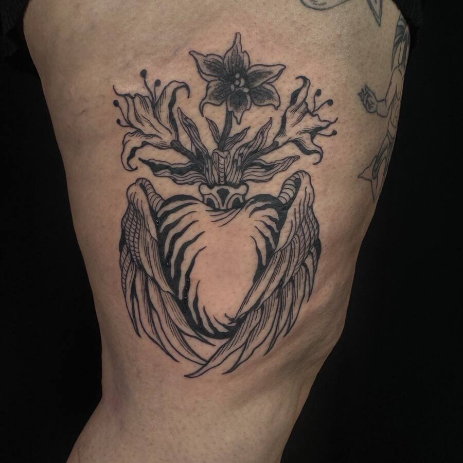
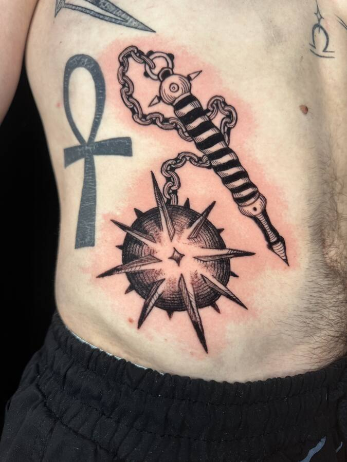
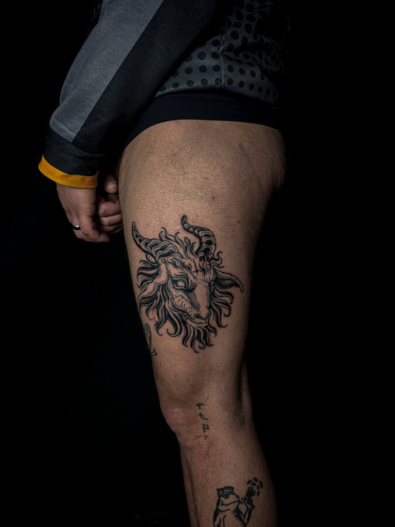

Tatoueur
Lausanne, et en voyage
Des dessins à l'encre noire, tatoués une seule fois.
Maxime
Flashs de l'automne
Chaque dessin n'est tatoué qu'une fois, puis rayé.


Pièces portées
Mains, lames, bêtes et cathédrales dans la brume.









Du carnet à la peau
Le chemin d'un seul dessin, le serpent et la main.

Carnet
Au crayon rouge, sans gomme.
Encre
Le trait est décidé.
Séance
Une personne, le temps qu'il faut.

Peau
Photographié une fois cicatrisé.
Où me trouver
Atelier à Lausanne, guest spots le reste du temps.
- LausanneAtelierToute l'année
- GenèveGuest spotOctobre 2026
- BerlinGuest spotNovembre 2026
Boutique
Un dessin à accrocher plutôt qu'à porter.
Rendez-vous
Le dessin choisi, l'emplacement, la taille. Réponse sous 48 heures.